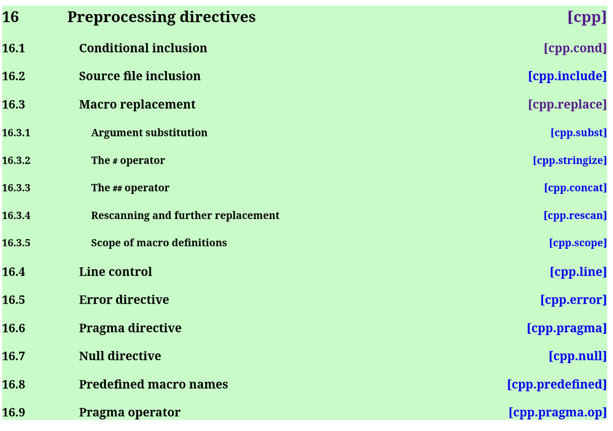

An alternative to CPP
Alan Zimmerman
Haskell Implementors' Workshop,
ZuriHac, 2025-06-06
CPP
- In use from the beginning, at least GHC 2.0
- Used mainly to manage differences between versions
- Is outside the language of Haskell
CPP Support in GHC
- CPP is an extension, which triggers all the machinery
- GHC provides predefined macros describing the environment
- Includes the GHC version, operating system, word size
- also versions of all the packages configured in the project, known to GHC when compiling a module
- cabal also emits a header file describing the environment it has configured.
- Even so, it is invoked as an external programme
Why is CPP a problem
- It does too much:
- ✅ conditionally select code
- ❌ continuation lines
- ❌ arbitrary text replacement
- ❌ include files
CPP and tooling
- Locations
- WYS ≠ WYG
- Comments
🎉 GHC_CPP 🎉
- subset implementation of CPP inside GHC
- just enough to control conditional compilation
- tooling friendly
GHC Proposal : Ghc CPP #616

Goal : managing version changes
- Enough power to cover > 90% of current version change usage
- Drop-in replacement for the features it does support
- Pure, so no include files
- Strictly limited scope, only applies in lines starting `#`
Implementation : Big picture
- Modify lexer to include tokens for preprocessor directives
- Add a preprocessing step between the lexer and parser
- Profit
Basis : CPP Spec
I worked from an online version at https://timsong-cpp.github.io/cppwp/n4140/ 
What features
- "bare minimum"
- Only process lines starting #, or continuation of one starting #
- conditionals:
- if variants
- elif else end
- define, undef
- error, currently ignored, could easily emit a diagnostic
- No #, ##
- No #include, keeps parser/lexer pure.
And not necessary.
- perhaps stlyised version of machdeps
Usage scenario 1 : CPP alternative
- Explicit usage instead of CPP
{-# LANGUAGE CPP #-} #if __GLASGOW_HASKELL__ >= VERSION_WITH_GHCCPP {-# LANGUAGE GHC_CPP #-} #endif
- Configured so that the CPP pragma is actually GHC_CPP, for supported compilers
- Possible make it ambient enabled
Complication: Line pragmas
- GHC Lexer.x already processes these natively
- Tooling Problem
- Swallows the original
- Location changes
Usage scenario 2 : Code modification
- skip/ignore unprocessed pragmas
- Turn line pragmas into comments
- means we can trust the lines for relative positioning
Experience report : hackage roundtrip
- download all of hackage as at Mar 16
- cleanup whitespace, line endings
- do a run, patch
- add missing pragmas
- from cabal files
- for changes in GHC, e.g.
NonDecreasingIndent
- minor edits for language changes
- " @ " -> "@"
- "! " -> "!"
- add missing pragmas
ghc-exactprint tweaks
- always allow
JavaScriptFFI - hard-code usage of GHC_CPP
- preset unit env macros to all of hackage
Results of ghc-exactprint
- 204,566 files processed.
- 508 could not be processed by GHC_CPP (0.25%)
32used #include385used #define58CPP-style comments21line concatenation12inadequate context emulationMIN_VERSION_xxxMIN_TOOL_VERSION_xxx
caveats
- This measures ability to correctly parse a file, and round trip it
- does not compare the resulting AST's from CPP and GHC_CPP
- i.e. does not explicitly check the fidelity of evaluating conditionals
- could be done easily enough as we compare original vs ppr versions
End
This presentation: https://alanz.github.io/hiw2025/

- GHC CPP proposal
- GHC feature branch: https://gitlab.haskell.org/ghc/ghc/-/tree/wip/az/ghc-cpp
- Matching ghc-exactprint: https://github.com/alanz/ghc-exactprint/tree/ghc_cpp
- Slides written in emacs org-mode using org-re-reveal for reveal.js
Questions?